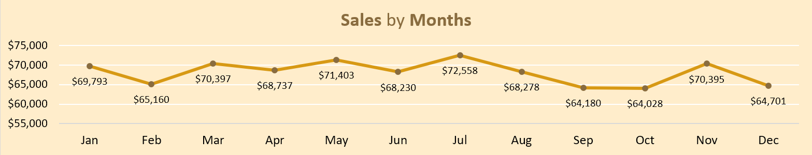
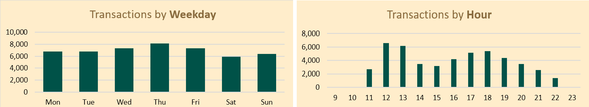
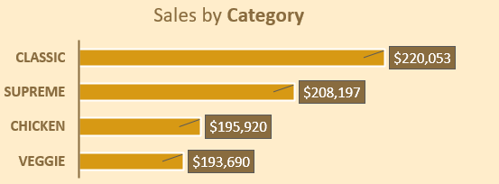
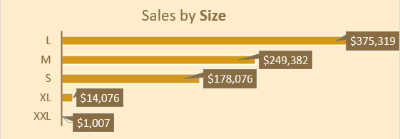
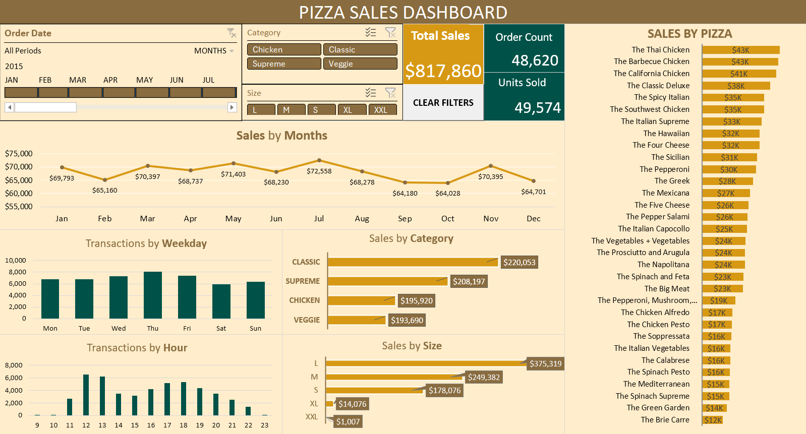

Pizza Place Sales Report
For the purpose of preparing for the next year, a fictional pizza shop has gathered all of the data regarding their sales over the course of a year and needs a report that summarizes every aspect of their operation. This can be accomplished by creating an interactive dashboard that allows users to see trends, spot patterns, and make wise business decisions. Excel will the tool of choice, along with all of its features, including Power Query, Pivot Table, and PivotChart.
The dataset consists of four tables: pizzas, pizza_types, orders, and order details. After joining tables and calculating fields in Power Query, the essential columns for analysis and make Pivot Tables are: Order ID, Order Time, Order Date, Pizza Name, Category, Size, and Total Sales. A summary of the report's main points is provided below:
1. Sales by Date:
- Average monthly sales: $68,155.
- Highest sales month: July ($72,558).
- Lowest sales month: October ($64,028).
- Notable increase of $6,367 from October($64,028) to November($70,395).
- Significant drop of $8,378 from July($72,558) to September($64,180).
2. Transaction by Weekday & Hour:
- Busiest day: Thursday (8,106 orders).
- Slowest day: Saturday (5,917 orders).
- Peak hour: 12 PM (6,543 orders).
- Quiet hours: 9:00, 10:00, and 23:00.
3. Pizza Type Sales:
- There are 32 type of pizzas: 6 Chicken, 8 Classic, 9 Supreme, and 9 Veggie.
- Best seller: The Thai Chicken ($43,434).
- Least popular: The Brie Carre ($11,588).
4. Sales by Category:

- Classic pizzas: $220,053 (The Classic Deluxe leads at $38,181).
- Supreme pizzas: $208,197 (The Spicy Italian is top at $34,831).
- Chicken pizzas: $195,920 (The Thai Chicken is the winner at $43,434).
- Veggie pizzas: $193,690 (The Four Cheese stands out at $32,266).
5. Sales by Size:

- Large pizzas are most popular ($375,319).
- XL and XXL sizes have only one pizza type (The Greek) with sales at $15,083.
- The Big Meat is the preferred small size pizza ($22,968).
6. Final Analysis and Suggestions:
- Total annual sales: $817,860 (48,620 orders, 49,574 pizzas).
- Consider targeted marketing campaigns during low-sales months (February, September, October, December).
- Optimize service for best quality during peak time (12 PM).
- One of the most popular flavors is chicken. Explore new varieties of chicken pizza for additional options.
- The Brie Carre only serves small-size, yet they are the second favorite small-sized pizza. Make greater sizes of the Brie Carre accessible.
- Consider promoting the top 5 best pizzas in XL and XXL sizes for better profits.
That brings an end to this analysis. All of the links for this project are included here:
- Excel Dashboard: github.com/MichaelTung259/Pizza-Sales
- Excel Table: mavenanalytics.io